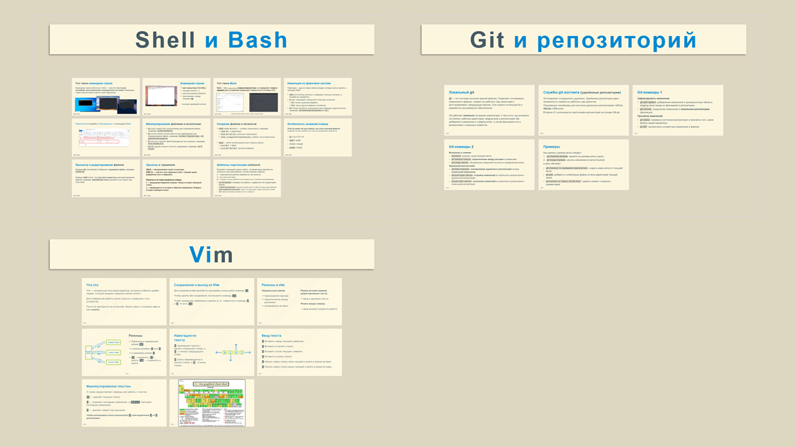

Презентации для школьников от школьника
День 1
Терминал, BASH, git, vim
PDF
PPTX

День 2 (доделывать презентацию не стану, можно выбросить в мусорку)
Bash сценарии, потоковые редакторы текста
Презентация 2
(
pdf
)